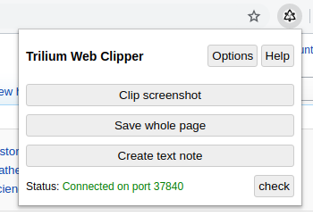

Trilium Web Clipper es una extensión del navegador web que permite al usuario recortar texto, capturas de pantalla, páginas enteras y notas breves y guardarlas directamente en Trilium Notes.

Los atajos de teclado están disponibles para la mayoría de las funciones:
Ctrl+Shift+S (Mac: Cmd+Shift+S)Alt+Shift+S (Mac: Opt+Shift+S)Ctrl+Shift+E (Mac: Cmd+Shift+E)Para instalarlo en Firefox, es tan sencillo como acceder al repositorio en GitHub y haciendo click sobre el archivo .xpi lo descargaremos e instalaremos.
Después añadiremos la url y contraseña del Trilium de nuestro servidor.
Es genial porque permite el importar no solo el texto, sino que también las imágenes.
Podemos instalarlo con la extension disponible en el Chrome Web Store.
También podemos hacerlo desde el repositorio en GitHub y haciendo click sobre el archivo .zip para chrome, lo descargaremos, crearemos un directorio y dentro de el descomprimiremos todo el contenido del archivo .zip.
chrome://extensions/shortcutsYa está la extensión instalada en Google Chrome. Ahora solo queda indicar la url y contraseña de nuestro servidor.
Para más detalles, siempre puedes consultar la wiki
Publicado por Angel el Friday 25 December del 2020
También te puede interesar:
Powered by org-bash-blog
Written in OrgMode with Emacs and converted to HTML with Pandoc

Este obra está bajo una licencia de Creative Commons Reconocimiento-NoComercial-CompartirIgual 4.0 Internacional.